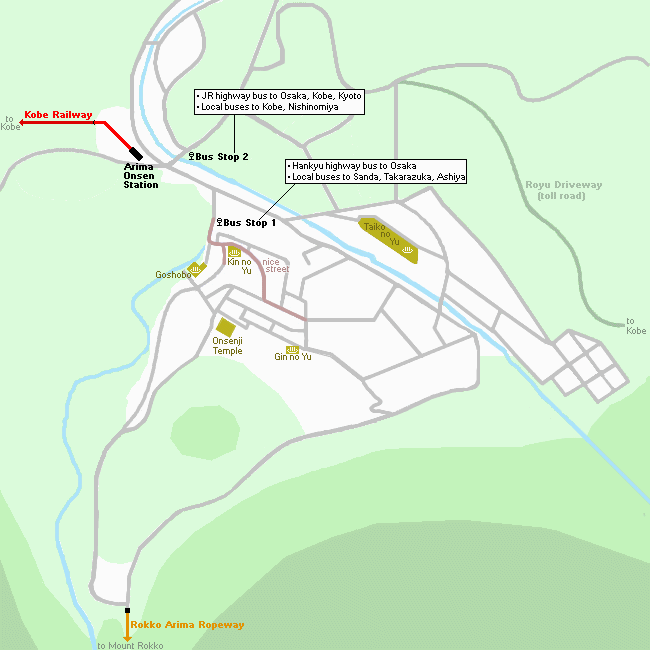

Arima Onsen (有馬温泉) is a famous hot spring town within the city limits of Kobe, but on the opposite side of Mount Rokko from the city center. The town lies in a natural mountain setting, yet is close enough for Kobe and Osaka residents as an easy day trip or weekend getaway.
Although Arima Onsen has a modern look today and is pretty built up, one can still find several narrow lanes and wooden buildings when strolling around the center of town. Due to its compact size, the small town can be explored entirely on foot, and there are several hot spring sources, nice temples and shrines and a small hot spring museum (200 yen) to be discovered.

With a history of over one thousand years, Arima Onsen is considered one of Japan's oldest hot spring resorts and has often stood at or near the top of onsen rankings for Western Japan. The town has two types of hot spring waters which spring up at various sources around town: the Kinsen ("gold water") is colored brown with iron deposits and is said to be good for skin ailments and muscle pain, while the clear Ginsen ("silver water") contains radium and carbonate and is said to cure various muscle and joint ailments.
Visitors to Arima Onsen can enjoy hot spring bathing at two public bath houses or at the town's many ryokan. Several ryokan open their baths also to non-staying visitors during the day. The admission fee for a daytrip visit to a bath typically ranges between 550 and 3000 yen.